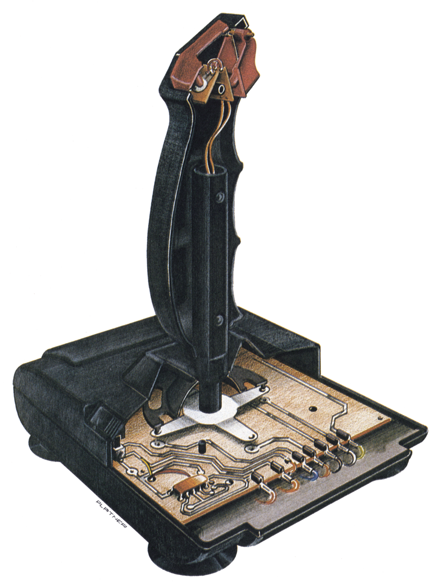
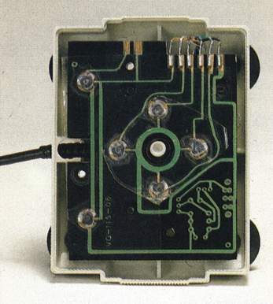
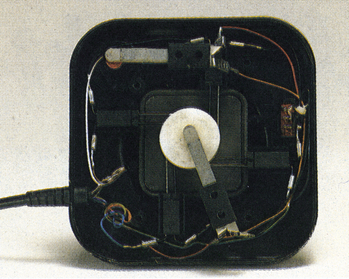
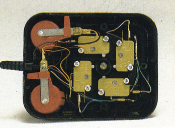
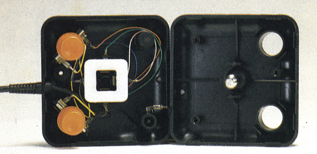
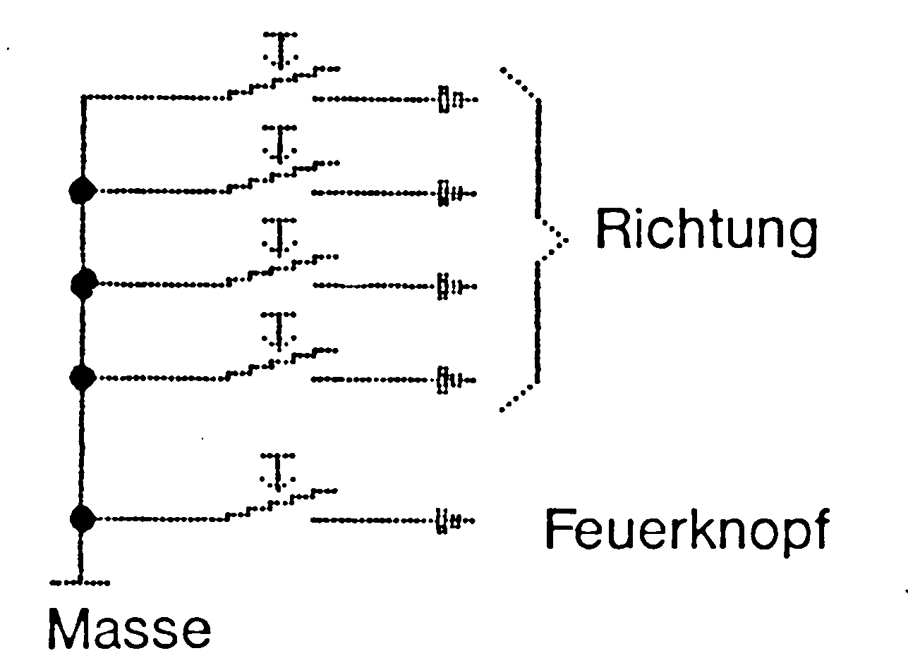

Wie kommt die Bewegung vom Joystick in den Computer?
Wie genial und einfach das Prinzip des Joysticks ist, läßt sich von außen kaum erahnen. Von der Mechanik bis zum Spiel ist es gar nicht so weit, wie Sie glauben. Deshalb wollen wir Ihnen hier erklären, wie ein Joystick funktioniert.

Heiße Actionszenen und punktgenaue Zeichenroutinen lassen sich durch den Joystick hervorragend realisieren. Die Umsetzung der Bewegung der Hand in die Bewegung eines Sprites oder eines Cursors wird durch den Joystick erheblich vereinfacht. Dahinter verbirgt sich jedoch längst nicht so viel Aufwand, wie sich vermuten läßt. Aufwendige elektronische Schaltungen oder komplizierte Mechaniken gibt es dort nicht, selbst der Aufwand der Software hält sich in Grenzen. Um Sie mit dem Eingabegerät Joystick vertraut zu machen, haben wir für Sie den Weg vom Joystick in den Computer nachvollzogen.
Rein äußerlich betrachtet besteht ein Joystick aus dem Gehäuse, einem beweglichen Griff und ein bis drei Feuerknöpfen. Würden Sie Ihren Joystick öffnen, dann würden Ihnen zuerst vier Schalter auffallen (Bild 1 bis 4). Sie sind so angeordnet, daß entweder der durch den Mittelpunkt ragende Hebel oder ein mit Noppen versehener Ring (Bild 1 und 4) beim Bewegen jeweils einen oder, in der Diagonale, zwei Kontakte schließt. Dies kann der Computer erkennen und entsprechend seines Programmes darauf reagieren. Eben diese Kontakte sind übrigens entscheidend für Stabilität, Lebensdauer und Schaltgefühl. Als anfällig haben sich die Folienkontakte in Bild 1 erwiesen. Es sind einfach zwei übereinander angeordnete Metallplättchen, von denen eines von den obengenannten Noppen durchgedrückt wird und so den Kontakt herstellt. Dieses Prinzip entspricht dem der Folientastatur einiger Taschenrechner. Die Konstruktion verliert schnell ihre anfängliche Festigkeit und leiert bei Belastung aus. Besser (und teurer) sind da schon Metallzungenkontakte (Bild 2) und Mikroschalter (Bild 3). Sie sind wesentlich stabiler und widerstehen intensivem Gebrauch und stärkster Belastung.




Die Schalter im Joystick sind nach einem einfachen Prinzip verdrahtet (Bild 5). Selbst das Dauerfeuer läßt sich mit einem kleinen, 8poligen IC (zum Beispiel der Timer-Baustein NE 555) realisieren. Die aus dem Joystick kommenden Signale lassen sich über den Joystick-Port an den Speicherstellen 56320 (Port 2) und 56321 (Port 1) auslesen.

Dort sind die entsprechenden Leitungen in einem Byte zusammengefaßt (siehe Sprite-Kurs in dieser Ausgabe und »Der Trick mit dem Joystick«, Ausgabe 11/85, Seite 24). Zwischen Port und Basic liegt nur noch ein Baustein, CIA (Complex Interface Adapter) genannt, der fast die gesamte Steuerung externer Geräte im C 64 verwaltet. Dieser Interface-Baustein übermittelt nun beim Ausleseversuch der Adressen 56320 oder 56321 die am entsprechenden Joystick-Port anliegenden Signale an den Prozessor. Damit steht dem Computer die gewünschte Information zur Verfügung. Das war es dann auch schon, denn ab hier ist alles eine Frage der Software, also Joystick links bewirkt die Bewegung einer Spielfigur nach links, Feuerknopf drücken und die Figur nimmt einen Gegenstand auf, etc.
(og)